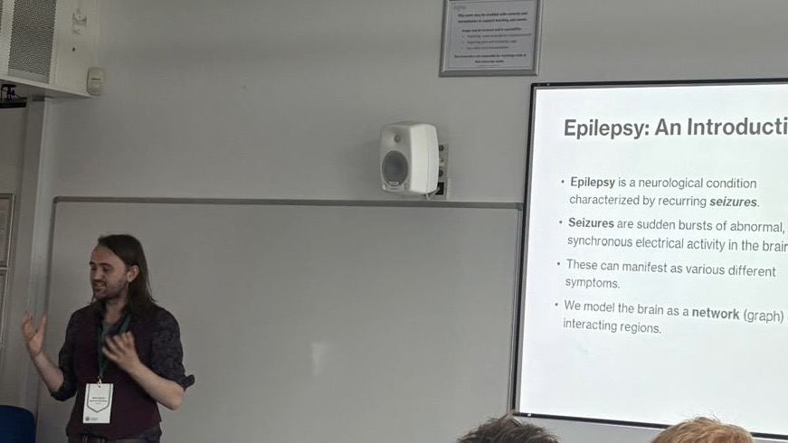

Preprints
- P. Kissack et al. “Multivariate resting-state EEG markers differentiate people with epilepsy and functional seizures”. In: medRxiv (2026). doi: 10.64898/2026.04.14.26350505
Publications
As first author:
- E. G. Harrington, P. Kissack et al. “Treatment effects in epilepsy: a mathematical framework for understanding response over time”. In: Frontiers in Network Physiology 4 (2024). issn: 2674-0109. doi: 10.3389/fnetp.2024.1308501
Other:
- L. Thompson et al. “A Digital Intervention for Capturing Real-Time Health Data for Epilepsy Seizure Forecasting: Protocol for the ATMOSPHERE Study”. In: JMIR Research Protocols 15 (2026), e85993. doi: 10.2196/85993.
- E. E. V. Quilter et al. “A Digital Intervention for Capturing the Real-Time Health Data Needed for Epilepsy Seizure Forecasting: Protocol for a Formative Co-Design and Usability Study (The ATMOSPHERE Study)”. In: JMIR Res Protoc 13 (Sept. 2024), e60129. issn: 1929-0748. doi: 10.2196/60129
Talks
-
"Towards an EEG-based decision support tool for the differential
diagnosis of epilepsy and functional/dissociative seizures”.
Maudsley Neurotechnology Meeting,
Invited co-Speaker, Online/King's College London/South London and Maudsley NHS Foundation Trust, November 2025 -
“Assessing the Impact of Anti-Seizure Treatments in
Network Models of the Brain”.
Joint British Applied Mathematics Colloquium / British Mathematics Colloquium 2025,
Contributed Talk, University of Exeter, June 2025
British Early Career Mathematicians' Colloquium 2025,
Contributed Talk, University of Birmingham, July 2025 -
“Treatment effects in epilepsy: a mathematical framework for
understanding response over time”.
Lunchtime Applied Mathematics Seminar, University of Birmingham, January 2024 -
“Brain Networks and Seizure Diaries: Mathematical Techniques in
Epilepsy Research”.
Lunchtime Applied Mathematics Seminar, University of Birmingham, March 2023
Poster Presentations
-
“Treatment effects in epilepsy: a mathematical framework for
understanding response over time”.
Perturbations in Epilepsy, Birmingham, June 2024
N-CODE EXPO, Birmingham, June 2024